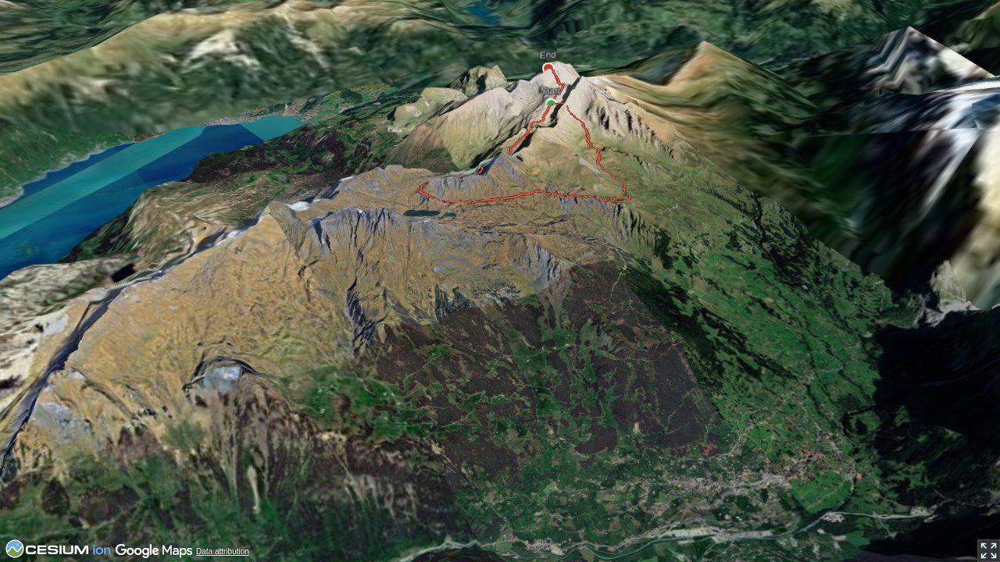

Das Gros der Wanderer, welche von der Bergstation First starten, sucht sich eine Wanderung südlich der Bergkette um Schwarzhorn und Wildgärst, mit konstantem Blick auf die Berner Hochalpen. Dabei gibt es beste Gründe, auf einer Bergtour die Nordseite zu erkunden: Zum einen ist die Zahl an Wanderern, welchen man hier begegnet, sehr überschaubar, zum anderen ist die Landschaft um Hiendertellti und den beiden Karseen Hagelseeli und Häxeseeli einfach wunderbar. Und einen wunderbareren und im Vergleich zum Schwarzhorn ruhigen Aussichtsgipfel inklusive. Biegt man oberhalb des Bachsees links um die Ecke wird man wieder von Schreckhorn, Eiger & Konsorten begrüsst.
Bergstation der Seilbahn Grindelwald – Bort – Schreckfeld – First. Sommer- und Winterbetrieb.
Quick Facts
| Summit elevation | 2891 m |
|---|---|
| Difficulty | SAC T4 Alpine hiking with exposure, rougher terrain, and sections that are not suitable for beginners. Guide |
| Trailhead | First (Grindelwald) |
| Region | Berner Oberland |
| Canton | Bern |
| Distance | 12.4 km (out-and-back) |
| Total ascent | ~995 m |
| Elevation range | 2081-2890 m |
| Route sources | SAC Route Portal |
| Route author | Bernd Jung (via SAC Route Portal) |
Photos

Auf dem blau-weiss markierten Alpinwanderweg zur Grossi Chrinne.
© Bernd Jung
Die Grossi Chrinne, auf den letzten Metern helfen Drahtseile über die Felsen.
© Bernd Jung
Im Abstieg von der Grossi Chrinne.
© Bernd Jung
Alles klar? Die Wegkreuzung P. 2590.
© Bernd Jung
Gipfelmann Wildgärst.
© Bernd Jung
Im Abstieg vom Wildgärst dominiert das Schwarzhorn.
© Bernd Jung
Nicht so hoch wie Schwarzhorn und Wildgärst, aber dennoch eine eindrückliche Gestalt: das Gärstenhoren.
© Bernd Jung
Das Häxeseewli.
© Bernd Jung
Begegnungen zwischen Häxe- und Hagelseewli.
© Bernd Jung
Rückblick zu Wildgärst (mit Wolkenschatten), Wart, Schwarzhorn und Grossi Chrinne rechts davon.
© Bernd Jung
Das Hagelseewli.
© Bernd Jung
Auf der Abstiegsvariante: Der Weg bei Hinterbirg in Richtung Axalp.
© Bernd JungPhotos: Bernd Jung — via SAC Route Portal
Planning
i
i
sac_scale (precise T1–T6) with
swissTLM3D Wanderwegart
fallback where OSM is silent (coarser T2/T3 and T4+ buckets).
Coverage: OSM 76.8% · swisstopo 21.2% · unknown 0.6%.Elevations computed from the inlined GPX track (SwissTopo height API).
Loading forecast…
Start: First (Grindelwald) (2590 m)
Route returns to First (Grindelwald).
Cable car to First (Grindelwald).
3D Terrain View

Route Details
Über Grossi Chrinne und Wart
- Auf- und Abstiegszeit bis/ab Wildgärst. Abstiegsvariante zur Axalp ca. 2:30 Std. von der Wegkreuzung Hinterbirg.
Terrain & safety
Ein Klettersteigset braucht es für den Aufstieg zur Grossi Chrinne noch nicht - der eigentliche Schwarzhorn-Klettersteig über dessen Südwestgrat beginnt erst bei der Grossi Chrinne. Dennoch ist Trittsicherheit auf dem steilen und teils geröllhaltigem Gelände auf beiden Seiten der Grossi Chrinne gefragt. Der Rest der Rundtour verläuft auf rot-weiss markierten Wanderwegen (max. T3). Im Bereich Hinterbirg - Wart könnte bei Nebel die Orientierung recht anspruchsvoll werden.
Source: SAC Route Portal
Field Reference
| Trailhead | First (Grindelwald) | 46.68480, 8.06610 |
|---|---|---|
| Summit | Wildgaerst (2891 m) | 46.69289, 8.07434 |
Coordinates are WGS84 decimal degrees (lat, lon). Emergency: 112 (general) or 1414 (Rega air rescue). Page URL: